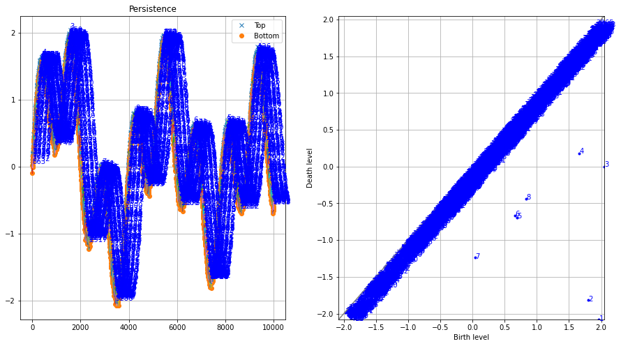

Performance¶
Lets compare the methods and tune the parameters and find out how the peak detection is with and without noisy data.
Comparison peak detection in one-dimensional data¶
Small dataset¶
For the first scenario we will create a dataset containing some small peaks and some larger ones. We will detect peaks using the topology and peakdetect method with and without interpolation.
# Import library
from findpeaks import findpeaks
# peakdetect
fp_peakdetect = findpeaks(method='peakdetect', interpolate=None, lookahead=1)
# peakdetect with interpolation
fp_peakdetect_int = findpeaks(method='peakdetect', interpolate=10, lookahead=1)
# topology
fp_topology = findpeaks(method='topology', interpolate=None)
# topology with interpolation
fp_topology_int = findpeaks(method='topology', interpolate=10)
# Example 1d-vector
X = [1,1,1.1,1,0.9,1,1,1.1,1,0.9,1,1.1,1,1,0.9,1,1,1.1,1,1,1,1,1.1,0.9,1,1.1,1,1,0.9,1,1.1,1,1,1.1,1,0.8,0.9,1,1.2,0.9,1,1,1.1,1.2,1,1.5,1,3,2,5,3,2,1,1,1,0.9,1,1,3,2.6,4,3,3.2,2,1,1,0.8,4,4,2,2.5,1,1,1]
# Fit the methods on the 1d-vector
results_1 = fp_peakdetect.fit(X)
results_2 = fp_peakdetect_int.fit(X)
results_3 = fp_topology.fit(X)
results_4 = fp_topology_int.fit(X)
# Plot
fp_peakdetect.plot()
fp_peakdetect_int.plot()
fp_topology.plot()
fp_topology_int.plot()
A visual look of the results for the peakdetect with and without interpolation. Note that the interpolated results are readily mapped back to the original plot.
|
|


The differences become clear with and without the use of interpolation
|
|


The four approaches results in various diffent peaks and valleys. A simple comparison, by means of a confusion matrix shows that the interpolation results in the detection of similar peaks and valleys.
Peaks detected between peakdetect vs topology using interpolation show only 4 differences in detection of peaks.
True False
True [45, 1]
False [ 3, 25]
A comparison between peakdetect vs topology without interpolation show 20 differences in detection of peaks.
True False
True [48, 13]
False [ 7, 6 ]
Large dataset¶
For this scenario we create a large dataset to detect peaks using peakdetect and topology.
# Import library
from findpeaks import findpeaks
# Initialize peakdetect
fp1 = findpeaks(method='peakdetect', lookahead=200)
# Initialize topology
fp2 = findpeaks(method='topology')
# Example 1d-vector
i = 10000
xs = np.linspace(0,3.7*np.pi,i)
X = (0.3*np.sin(xs) + np.sin(1.3 * xs) + 0.9 * np.sin(4.2 * xs) + 0.06 * np.random.randn(i))
# Fit using peakdetect
results_1 = fp1.fit(X)
# Fit using topology
results_2 = fp2.fit(X)
# Plot peakdetect
fp1.plot()
# Plot topology
fp2.plot()
fp2.plot_persistence()
The topology methods detects thousands of local minima and maxima whereas the peakdetect approach finds the correct ones.
|

The homology-persistence plots can help to filter the thousands of hits that are mostly alongside the diagonal and therefore not of interest. Only a few points seems to be of interest; numbers one to eight. With this knowledge we can set the limit paramater and remove the false positive peaks.
 |
Redo the analysis but now with the limit parameter. Note that your should investigate first what your limit is.
# Checkout the limit by looking at the top 10
limit_min = fp2.results['persistence'][0:8]['score'].min()
from findpeaks import findpeaks
# Initialize topology
fp2 = findpeaks(method='topology', limit=limit_min)
# Fit using topology
results_2 = fp2.fit(X)
# Plot topology
fp2.plot()
fp2.plot_persistence()
|